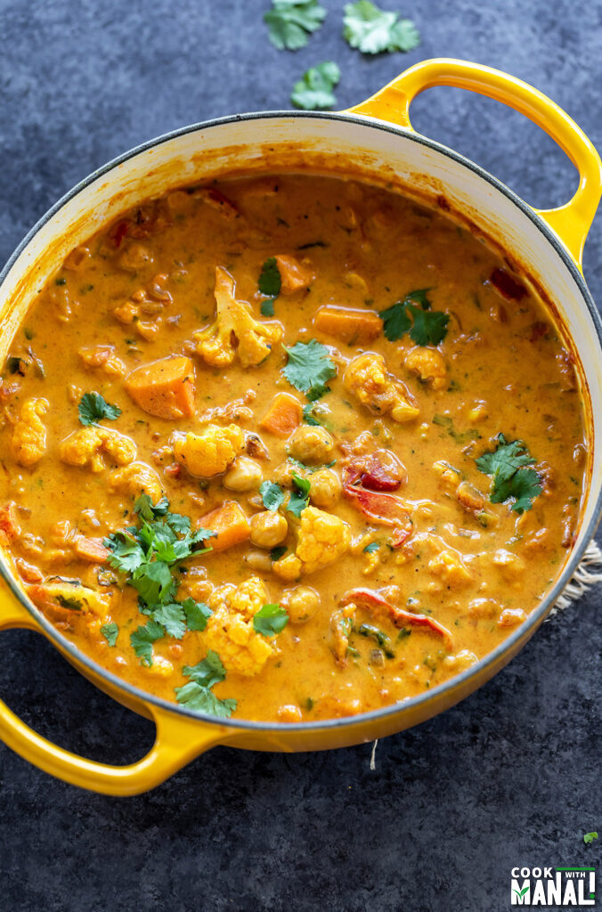
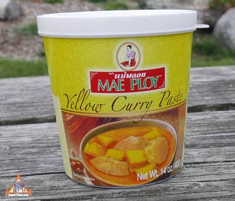

The Most Basic Curry
Depending on where you live.

How could you think Steph Curry's successs was basic?
There's nothing like good curry. It satisfies something deep inside of us.
So much so, that I feel bad for anyone who doesn't like curry. The blend
of flavors paired with rice or naan is exquisite. From the first to
the last bite, you will feel contentment in both body and soul. And best
of all, it's easy to make! As long as you buy the difficult part. You have
to choose a good curry paste or powder or it will be disappointing. My favorite
is the yellow one from Mae Ploy. It's also their only vegetarian option.

So grateful for prepackaged bases.
With that, we can get started with our ingredients list. You might not have
all/enough of these, so it's good to check first. Make sure to follow the
instructions on your curry paste/powder of choice for ratios.
Ingredients:
- Curry paste
- 1/2 a white onion coarsely diced
- 1/4 cabbage coarsely diced
- 1 yellow potato coarsely diced
- 1/2 a red bell pepper coarsely diced
- 1 carrot coarsely diced
- Any other veggies you want to add. Cauliflower is a great option.
- 1-2 can(s) of chickpeas opened, or equivalent amount cooked prior.
(Because you don't need to kill an animal.)
- 1 can of regular coconut milk, opened
Steps:
- Place a 1 or 2 quart pot on the cootop at medium heat.
- Drizzle oil in the pan.
- When oil is hot enough, add onions, bell peppers, and carrots. Stir occasionally
for even cooking.
- When onions start to turn yellow, add in the curry paste. Stir enough so that the
curry paste doesn't stick to the bottom. Cook for 1-2 minutes.
- Add in coconut milk. Then, fill the can with water and pour that in as well.
(Because 2 cans of coconut milk is just too much fat.)
- Turn the heat up to high and add in the rest of the ingredients. Stir all the way
to the bottom to make sure the curry paste didn't stick.
- Bring the pot to a boil, then turn it down to a gentle simmer. Cook until the
potatoes are soft. Stirring occasionally. If you like the curry to be thicker,
leave the pot lid off. Just make sure it doesn't burn at the bottom.
- Serve over rice or with some other kind of bread. Or just enjoy the potatoes.
They're all good options.